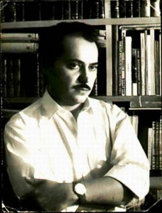

Solo quando il grande poeta cubano Fayad Jamís sarebbe 83 anni, Sarà presentato martedì 12 Novembre per il 6:00 PM, un commemorativo tarja o edificio e 27, dove ha vissuto gran parte della sua vita.
Amici ed estimatori della sua opera poetica e pittorica ci incontreremo, convocata dal Festival internazionale di poesia dell'Avana, sotto l'egida dell'ufficio dello storico città.
Attori e poeti darà la sua voce a Fayad Jamis in un progetto a lungo accarezzato dal giornalista Andres Castillo Bernal.
Pablo Armando Fernández e il gruppo del Buscón teatro e gli attori di Mimoclam che Teatro darà riparo martedì a prominenti intellettuali cubani ora scomparso 25 anni.
Fayad Jamis è nato a Zacatecas in 1930. Ricordare è per celebrare uno dei più intensi della poesia cubana e originali voci.
SELEZIONE DI POESIE DI FAYAD JAMIS
CHE SAREI IO
Mi sarebbe se lei non esistesse
Mia città dell'Avana
Se non si esistesse la mia città di sogno
Chiarezza e la schiuma edificata,
Che sarei io senza i portali,
Le colonne, tuoi baci, le finestre.
E alla fine di questa poesia, ha detto:
Se lei non esistesse si inventasse
Mia città dell'Avana
CON COSÌ TANTI CLUB CHE TI HA DATO LA VITA
Con così tanti club che ti ha dato la vita
e ancora si stanno dando ancora sogni di vita.
Sei un pazzo che mai si stanca
Aprire finestre e crescere le costellazioni.Con così tanti club che ti ha dato la notte
tanta crudeltà e freddo e tanta paura
Sei un triste sguardo pazzo
Egli solo sa amare con tutto il petto.Costruire aquiloni e poesie
e altre sciocchezze che il vento.
Sei un triste sguardo pazzo
Si sente che è nato un nuovo mondo.Con così tanti club che ti ha dato la vita
e ancora non si stanca di dire: Ti amo.
DA QUESTA LIBERTÀ
Di questa libertà della canzone sotto la pioggia
dovrà dare tuttoPer questa libertà di essere strettamente legato
al cuore del villaggio fermo e dolce
dovrà dare tutto
Per questa versione di girasole aperto all'alba delle fabbriche
scuole accese e illuminate
e di questa terra che scricchiola e bambino risveglio
dovrà dare tutto
Non non c'è nessuna alternativa ma la libertà
Non c'è più senso di libertà
Non non c'è nessun altro paese che la libertà
Non ci sarà nessun altro poesia senza musica violenta libertàDa questa libertà che è il terrore
di chi sempre violentata
a nome di miserie sontuosi
Da questa libertà che è la notte degli oppressori
e l'alba finale di tutte le persone già invincibile.
Da questa libertà che illumina le pupille incavate
A piedi nudi
tetti incapaci di ritenere
e gli occhi di bambini che vagano nella polvere
Da questa libertà che è la regola della gioventù
Da questa libertà
bella la vita
dovrà dare tutto
Se necessario
l'ombra
e non sarà mai abbastanza.
HO APERTO IL CANCELLO DI FERRO
Ho aperto il cancello di ferro,
Mi sentivo come esso cigolava, urtato da un tronco
e ho guardato una finestra illuminata, ma la mattina presto
Ha divorato le foglie e tu non c'eri a dirmi
che il mondo è rotto e arrugginito. Sono entrato,
Salii le scale in silenzio, Ho aperto un'altra porta,
Ho preso il mio sacco, Mi sedetti, Mi sono detta Sto sudando,
Ho iniziato a colpire il mio discorso povera macchina,
russare e morendo (Hai dormito, Dormi, non si conosce
quanto ti amo), Ho preso il mio cravatta e camicia,
Ho avuto la nuova anima che ho fatto questo pomeriggio,
Io continuavo a tipizzazione e maledicendo, amarti e mordermi
polsini. E improvvisamente si avvicinò a me altre voci:
cantavano cose impossibili e belle, IBAN
illuminazione
la mattina, si ricordavano di baci che sono stati lasciati a marcire nel fiume,
labbra che distrusse l'assenza.E non volevo dire nulla
più: Non voglio parlare, Forse in chirp
il cancello ho rotto crudelmente l'aria del tuo sogno.
Ciò che conta per entrare o uscire o desnacer.
Prendo le mie scarpe
e ho buttato li ciechi, amorevolmente, contro il mondo.
GUARDATELA: È MOLTO BELLO
Guardatela: è molto bello, sua risata colpisce la costa,
tutti iras e schiume. Ma non cercare di
Digli quello che pensi. Lei è in un altro mondo
(vi sono non più di un estraneo nei tuoi occhi, tua età)
Dile, in ogni caso, ti piace sardine fritte,
soprattutto una serata in cui piove un'indimenticabile
vino bianco. Parlare della bella fuegode vostro paese.Lei è luce e buio come pioggia che Regina
tua città. I suoi occhi si sono fermati in un punto traballante
tra la stazione di amore e un tempo imprevedibile.
Certo, che a volte ci dimentica (per un attimo, è vero)
tuo studio notarile, e, come un essere umano alla fine,
si arriva a parlare liricamente di politica.Il meglio
cosa si può fare è quello di convincervi che la poesia si completa,
controllare che hanno attraversato il confine dell'orrore e angoscia,
scrivere un pomeriggio che recò
la bella città di ciottoli
per trovare ciò che non potrebbe essere amore
ma il poco sonno
ti ricordi un sogno.
POESIA
Che cosa è per te la poesia oltre a?
una pietra forata da sole e pioggia,
Oltre a un bambino che muore di freddo
nella miniera di Perù,
Oltre a un cavallo morto a Tornio
a cui il tinosas descrivere eterna
Cerchi di fumo,
Oltre a una donna anziana che sorride
Quando si parla di una nuova ricetta
per rendere il cervello fritto
(La vecchia donna, Nel frattempo, dicono
le meraviglie dell'elettronica, Cibernetica
e astronautica),
Oltre a un revolver fiammeggiante,
un pugno chiuso, una foglia di yagruma,
di una ragazza triste o felice,
Oltre a un fiume che rompe il cuore di una montagna?
Che cosa è per te la poesia in piùdi una fabbrica di giocattoli,
Oltre a un libro aperto come le gambe di una donna,
Oltre alle mani callose di operaio,
Oltre le sorprese della lingua–che oceano continuo completamente creato dall'uomo-,
Oltre alla partenza di amantialla notte, assalita dal nemico di bombe,
Oltre le piccole cose senza nome e senza storia
(un piatto, una sedia, un dado, un fazzoletto,
un po' di musica nel vento pomeridiano)?
Che cosa è per te la poesia come un vetro
l'acqua alla gola assetata,
Oltre a una montagna di macerie
(le rovine di un vecchio mondo abolì la libertà),
Oltre a un film di Charles Chaplin,
Oltre a un popolo che trova la tua guida
e una guida che trova il suo popolo
all'incrocio della grande battaglia,
Oltre a un albero di Ceiba spargimentosuoi fiori nell'aria
Mentre il contadino si siede per pranzo,
Oltre a un cane che abbaia tu alla propria morte,
Oltre il rombo degli aereirompere il suono barreradel
(Penso che soprattutto nel nostro cielo e i nostri eroi)?
Che cosa è per te la poesia come una lampada illuminata,Oltre a una gallina chiocciare
perché hai appena messo,
Oltre a un bambino che prende un accountcomprando un mamey gelato
Oltre al vero amore,condivisa come il pane quotidiano,
Oltre la strada che va dal buionella luce (e non il contrario),
Oltre la rabbia di chi è torturatopatrimonio netto porqueluchan
e il pane sulla terra,
Oltre lo scorrimento sul marciapiede bagnatoe che si stanno vedendo,
Oltre al corpo di una ragazza nudasotto la pioggia,
Oltre che i camion che passano a pienodelle merci,
Oltre agli strumenti che ci ricordanoun ragno o una lucertola,
Oltre la vittoria del debole,
Oltre i giorni e le notti,
Oltre i sogni dell'astronomo,
In aggiunta a ciò che spinge in avantil'immensa umanità?
Che cosa è per te la poesia?
Rispondere in maniera molto leggibile,stampare preferibilmente.
PAROLE
Tramonto pieno di pesci
Oh Mason oh beggar
Tutte le colonne stanno andando a morire
sbuffi di fumo i discorsi del CongressoMa l'amore, ma gli alberi
ma le scarpe di Charlot
essi tremano negli occhi di nascitaIl velivolo che vi darà tutto il mondo
in un batter d'occhio
scriveranno parole rossi nel cielo
Parole come disegni dei bambini
Parole per uomo e bestiaOh oh Mason oh beggar poeta
i nostri futuri partner
Essi hanno le ossa di vetro
DOMANI
Piccioni gatti intorpiditi
Luce dal lucernario del mattino
tagliare gli oggetti in due
Gatti corretearán nuovosui soffitti di vetro
i piccioni si scuotono le alicontro il cielo sporco
Sul tavolo il pane duro libri il calamaio
ogni volo del giornoe un terribile desiderio di libertà
sul tavolo, sulle mie scarpe fino al cielo
splendente in CubaIeri è venuto a me ti dico domani
l'odore di fragole riempi il mio cuore
Fa caldo non c'è vento
Ho bevuto birra caffè
La mia anima è una grande baia
dove c'è una barca che sarà
LE CASE DEGLI DÈI
Le case degli dèi sono pietre
i palazzi dei dignitari sono pietra
gli appartamenti dei sacerdoti sono pietra
dimore dei guerrieri sono di pietre
i cuori dei maestri sono pietra.I nostri rifugi sono fatti di paglia,
tutto ciò che possediamo è essere
Siamo uomini di paglia, di paglia di mais.Essi possono diventare cenere in un istante
Siamo feccia,
Possediamo solo anime di pietra.Fuoco dei e semidei
Si dominano questa terra e le sue creature
rimane perennemente sveglio
ci abbagliano e ci infondono con paura.Siamo fatti cenere, nessun nome di scorie:
Noi siamo ciò che i maestri ci vogliono.Ma viviamo con un comfort di nascosto
e noi abbiamo tesori che ignorano persino i dèi:
le anime dure come basalto.
PADRONEGGIARE IL TEMPO PER AMORE, ORA LA NOTTE
Amo il tempo di amare, ora la notte
si diffonde in stelle e tiepidezza.In un angolo vedo
tempo di mordere, ti sta cercando
nei volti che vengono, nella fretta
coloro che temono che la notte è perso.
Vedo con i miei anni di fuoco colpite,
Associata alla bestia della mia giovinezza.Voglio crescere in te, darvi la vita nelle mie mani,
ottenere più pura terra
interamente miniera, ciecamente mia,
Creatura dei sogni più belli di colore.Amo il tempo di amare. E tu sei la pioggia
perché ora ho gli occhi
tutto ciò che può esplodere in colore e profumo.
Tu sei la pioggia che arriva di sorpresa,
Sei la chiarezza dei miei occhi, l'acqua che vogliono le mie labbra,
Creatura di colore del vento nella notte.Spero che tu, Amada mia. Bella è la notte.
Le voci delle persone non possono disattivare il suono dei tuoi passi.
Ti sento venire fretta, invaso
di preoccupazione, spaventato da qualcosa,
e i tuoi occhi mi guardano, chiedendo aiuto
mentre io mido e battendo il tempo.Quando si arriva non ci saranno molte parole.
Bella è la notte, immenso, e ho sete, Amasa.
Fretta. Le mie mani sono assetate
Io vado a prendere fino alla fine della notte,
là dove non è più possibile il ritorno.
Vi mostrerà i segreti di vecchi e di più
cerimonie terribile
il paese del mio sangue.
MANSA AGUITA MARE
I tuoi occhi sono due ossidiana
Esso tornasolan mattina
La bocca è fragola e anguria
È la nascita del giorno
Il vostro corpo è una agüita di mansa
Il cervo non raggiunge
O al vostro tempo di agonia.
A VOLTE
A volte, nel silenzio della sala, qualcosa salta,
qualcuno rompe qualche vecchio nome.
Folle volo attraversa ronzio, masterizzazione
dal Web luminoso.
Questo è così, solo; ma così pieno di sorprese.
Casa dei fantasmi senza figli, polvere l
rende windows nuovo, danze e mobili nuovi.
Non, non si conosce, non si ho visto molto alunni
ed ecco perché sono pieni di lacrime. Ascoltami:
Casa mia non è perdita; è di gran lunga sempre.
Queste scale andare fino al nero.
Uno ottiene stanco di caricarle e ansimando dorme
senza conoscere i giorni, la febbre, o il rumore enorme
che si riduce in fondo.
A volte, nel silenzio della sala, qualcuno nato improvvisamente,
qualcuno che gioca in porta senza numero e vocazione.
Non, non sono stati qui mai. NI, non vieni.
Mia parola è aperto, ma è che io sto quasi sempre in viaggio.
AUSCHWITZ NON È STATO IL MIO ASILO
Auschwitz non era il giardino della mia infanzia. Sono cresciuto
erbe e bestie in casa mia
povertà accese la sua lampada di notte.
Gli alberi sono stati caricati dei nidi e delle stelle,
dalle strade passato spaventare un Mare molto bianco.Auschwitz non era il giardino della mia infanzia. Solo posso
ricordare il sacrificio di lucertole,
casa del fuoco scuro sul vento di notti,
ragazze loro risate nel fiume di balneazione,
Camicia di sudore mio padre, e la paura
prima l'urlo brutale delle acque.Auschwitz non era il giardino della mia infanzia, Ho mangiato caramelle
e le lacrime, nel mio piano di legno conquista
nuvole di erbe e pelle umana non.Io sono un privilegiato questa volta, Sono cresciuto sotto la luce
violenta della mia terra, Nessuno mi ha costretto a camminare
su tutti i fours, e quando mi chiedono il mio nome
Parte di fulmine all'ombra di un guasima.
QUANDO GUARDO GLI OCCHI
Quando guardo gli occhi
Vedo in loro la patria
Io non riesco a separarli
così chiara immagine.Essi sono come il vento
rendendo i rami tremare
mi guardi e poi
alba alla Guasimas.Rimanere per sempre
nella mia notte, Mia lampada
Mia lampada
il cibo, tua fiamma
Dormi e scrivo
e tutto è bello amato
il mondo, le stelle
le fabbriche e i campi.Rimanere per sempre
nella mia notte, Mia lampada
che non si spegne mai
un giorno gli occhi,
che non si spegne su di me
il blu della fiamma
chiaro come il giorno
che sviluppano nella patria.
IL BOIA DEL BONAPARTE CAFÉ
Di Pablo Armando Fernández
Non conoscere la profondità del fumo
non ingoiare i giornali della sera
non uso alcune montature di occhiali ricoperti di sangue o Web
Era seduto in un angolo lontano da specchi
prendendo una tazza di caffè, non sentendo il giradischi
ma il rumore della povera pioggerella
Era seduto in un angolo lontano da fulmine
lontano da leoni viola da tutte le guerre
Ha fatto una corda con un foglio di carta
Quando furono scritti il nome del padre del nome del Presidente
e altri nomi illustri del duemila
e in considerazione di tutti
Esso appeso Cappellaio brilla sulla sua testa
Il modello del caffè è uscito sotto il suo mantello nero in cerca di un ufficiale di polizia
Armstrong ha cantato incessantemente luna era apparso
come un furioso gatto su un tetto
Tre ubriachi erano fatti allo sportello
e impiccato dopo a dondolo dolcemente per un quarto d'ora
con la sua voce lontana
ha cominciato a fare un bel discorso:
“Maintenant je le dans di suis Emiliano Bona
La pioggia è il mio quarzo miseria
I politici rosicchiano il mio bastone
Se non vuoi avere impiccato morire
la strana malattia
che si soffre di coloro che non mangiano
Nelle mie tasche portare carte stropicciate
Ho scritto io stesso
per ingannare la mia solitudine
La gola era piena di silenzio
ora è pieno di morte”“Sono nell'amore con la donna che tiene le chiavi per la notte
Lei ha guardato negli occhi senza sapere chi sono
Ora tu lo sai leggere la mia storia di fuliggine sui giornali
Sai che ho chiamato Louis Krizek
il cuore del cittadino Freemen
erede della cenere di alba
Ho vissuto come un fantasma
tra i fantasmi che vivono come uomo
Ho vissuto senza odio e senza mentire
in un mondo di giudici e ombre
La terra dove sono nato non era mio
e non l'aria che il riposo
Ho posseduto solo la libertà
cioè il diritto di essere sottoposto a vagare
essere questo corpo freddo
appeso come risultato
tra coloro che cantare e ridere
tra una spiaggia di birra
e costruito un tempio per adorare la paura
La donna che tiene le chiavi per la notte
So che mi hai chiamato Krizek
e lui zoppicando un po', e mi è piaciuto
Sai che ora non sono solo a me
andando via un vecchio mondo
eliminati definitivamente all'alba
Così come la nebbia a volte schiacciare
i fiori di ciliegio
la morte ha schiacciato la mia voce”Quando il modello è tornato con una polizia di latta e zolfo
Il boia del Café Bonaparte
Non era più che traballante fumo un sigaro
sotto il Cappellaio
una tazza di caffè
LA FILOSOFIA OTTIMISTA
L'ottimista è seduto al tavolo, Ha guardato al suo intorno
e alcuni di quel poco che hanno trovato si avvalse. Hanno detto di lui
che era troppo nulla (in realtà c'erano pocomucho)
ma ha divorato la loro razione senza commento,
aprì il giornale, il caffè è affumicato e finito
Cenare in pace. Ha pensato: Ho il diritto di mangiare con gioia
il pocomucho che ricevo mentre l'abbondanza.
Tuttavia hanno continuato a parlare di tutto ciò che c'è
Non ci è no no. C'è questo o l'altro.
Ma l'ottimista si alzò in silenzio
e ancora una volta ha ricordato quegli anni in cui mangiavano solo
lacrime. Non c'era nessuno a dire che voi non ci zuppa o bistecca
o prendere un pezzo di pane duro per il suo cane di fame,
ma mai dai suoi denti è uscito discorsi.
E adesso era soddisfatto di cena frugale. Uomo
Uscì e cominciò a camminare come lei fischiato.
Luci elettriche ha ricordato il futuro.
È MEGLIO ALZARSI
Se non riesci a dormire, alzarsi e Sfoglia.
Se non si conosce la morte segue imparare ad amare.
Dawn non chiudere il tuo mondo: all'esterno vi sono stelle,
ospedali, enormi macchine che non dormono.
All'esterno sono la zuppa, il magazzino che alimenta i vostri sensi
il vento nella tua città. Alzarsi e girare
le turbine della tua anima, fare non pneumatico del camminare
ovunque, segnando la sporcizia più recente
che hai lasciato la tua terra, perché tutto si trasforma
e voi non hanno più gli occhi per l'orrore abolita.Alzarsi e moltiplicare le finestre, sputo in faccia
degli infedeli: per loro tutti i verdi sono ruggine.
Sparare il vostro linguaggio di Victor, non solo si aspettano la tabella tranquilla
mentre altrove nel mondo, assassini di chillan.Se non potete sognare colpisce i tronchi polverosi.
Se non sai vivere non insegnare a vivere invano.
Macina la realtà, rompere le scarpe ascolto strade,
non fare l'elemosina. Alzarsi e aiutare il mondo a svegliarsi
RAGAZZA IN BANAO
N′aime terre le pas cantata o les ordures.
Agrippa d′aubigneL'autobus fermato. Viaggiatori cadde uno.
Eri tra la folla di ragazze che lavorano la terra
e il sole di mezzogiorno. I viaggiatori sono venuto a scanalature,
ai volti; Hanno interrogato e sudore, e poi sono tornati al bus
Quando tu ti sono venuto e ha iniziato a parlare con me, e, Po
sorrise, Ho risposto: “Mi ritraggono, mi ritraggono”. Ho capito
Puoi fotografare con la mia camera vuota, raccogliere i tuoi occhi
nella terra del tuo volto, Perché volevi che fantasma
Ha vissuto nelle mani di uno sconosciuto. E anche se davvero
Ho dimenticato come sono, ora ho iniziato a fare con testi
tuo ritratto: Ecco la luce sudata di Banao
e le macchie dai tuoi occhi di fronte alla folla.
PER UNA SCIARPA PERSA
Di Andrés Simor
Il colore della sciarpa oro antico
che aveva accompagnato me vivere per tre anni
la gloria della miseria di luce amore
la solitudine delle strade strette come bare
e tutti i momenti che l'acqua sarà essere registrazione con linee verdi
di fronte le statueQuella sciarpa colore oro vecchio acquistato nella nebbia di Genova
(Cinquecento lire all'ingresso dell'Europa)
Bandiera della libertà poesia bandiera sciarpa
in un mondo di pietre indossati in cui l'uomo
dolorosamente
tenta di rinnovare incessantemente
nessun invecchiamento
per non morireIl colore della rue sciarpa cane Viconti
(la strada in cui è sempre nevica o piove)
Perdo solo esso è caduto indietro
con un po' della mia giovinezza
ora che l'umidità abita le pareti
e la notte cresce sotto gli involucri
con l'agitazione glassato di rami
PROBLEMI DELLA PROFESSIONE INFERMIERISTICA
Mentre ti togli le scarpe pensate in poesia,
Sai che una volta che si scrive qualcosa di simile a una grande poesia,
ma sai che è di alcuna utilità per raccogliere materie prime
per quando si raggiunge l'occasione. Si può stare e urlare
il tuo fantasma che è il momento di mettere le mani su.
Si può mangiare il vostro cucchiaio con lacrime, Scegliere una memoria,
saltare come un uomo saggio per scoprire le possibilità dell'impossibile.
Ma non hai niente: la poesia ti guarda con occhi di rospo,
fugge come un topo tra i rifiuti e le carte, fiori
nel cortile di casa, È in fondo a una pentola e non lo vedo,
vederlo e lo sai e toccarla, è il tuo pane di notte, Ma, anche
di non prenderlo, e se si riesce a prenderlo per il collo, magari rompono,
si blocca sul naso; ed è vero che non sai per impastare
la relazione di sostanza diversa. Ottenete ad abbaiare perché poi
Ricordi che ti è successo così con capre e pecore (ognuno era
tirando la corda verso il loro mondo) e poi si riflettere se non sarebbe meglio
Note di riunione IR su un determinato argomento, Vai girando intorno
un fumo di tabacco, fino a quando le piante raggiungono la grupas
delle cavalle che sudan e nitrire a bordo della poesia.È inutile. Inutile. Così non si ottiene di possedere il vostro ufficio: delle tue mani
A volte saltano, rotto, le parole. I versi si fondono tra i denti,
e improvvisamente si asombras un uomo per abbattere ad alta voce suo sarcofago.
Qui tutto è possibile. Essi erano i torturatori, le pietre diventare
in pani o fulmine. La tempesta ha sorpreso si
e ora lo alimentano con i pugni chiusi. Non ci sarà nessun pollo morto,
proiettile o panno che paralizzano. Esso comprende quelle strade, Questi guásimas:
Essi sono gli stessi che sono morti, la stessa che già vivi
e Sfoglia, ma il vento è venuto con loro semi nella vostra casa.Se avete intenzione di dormire per ricordare il bicchiere d'acqua, Da allora, non è
per i Santi ma per i sogni della vostra sete, preparare i documenti,
Le scarpe a bordo. E non dimenticate di seguire si affacciato sul baratro,
fare non pneumatico di vivere spinto verso le radici delle cose, morsi
l'amore nel tuo fuoco, nelle sue sale. Aiutare i vostri fratelli per costruire la grande casa
in quanto non sopportano la crudeltà. Un giorno si scriverà una poesia grande.
ALBA-VAGABONDO
Nicolás Guillén
Pallida mattina che Parigi cresce sulle mie spalle
Dopo la notte questa brezza lungo il mio amore
Miele di colore foglia dell'autunno scivolando attraverso le strade
sui marciapiedi le foglie cadono sulla testa di pezzenti
Anche dormire è stata sollevata una donna raccolta un berretto
Aveva ai piedi di un dormiente e ha coperto il viso
La tenerezza di quella donna sotto stracci neri
come pallido come il fiore di giorno piccione
esso svolazza sul fumo di cristallo d'argento di SennaQuindi ecco l'alba vi dico ora che è caduta
Questa è l'alba della città è morta ossa può essere picchiettata giù
e nessuno potrà dire nulla poliziotti dormendo orecchie di sughero
Leggi dormire sonnecchiano miseria io cammino modo
primo uomo in questo nuovo giorno, come se la città fosse mia moglie
e cielo essendo nato dalla sua schiena ho contemplato nudoCosì è Parigi vi dico a volte sogno che camminare un mondo morto
Dopo l'ultimo attentato ha ucciso la speranza
Non capisco molto, ma mi sento un po' Robinson Crusoe
Ronbinson di questa terribile bella grande città chiamata Parigi
Gatti escono dappertutto buoni giorni che vengono riempiti i barattoli di spazzatura
frutta giocattoli rotti, vestiti strappati documenti in putrefazione
carte dove oblio ha lasciato la sua cicatrice scura
La civiltà del mondo che è morti gatti e sono sopravvissuto
Di fronte a uno di questi ponti, sceglierò la mia casa
Forse è la tenda rossa nella finestra
o un altro che si muove come se a Ciao Buongiorno
Ma non è verità dietro tutti quei muri grigi ci sono uomini
hanno respirazione russare e sogno
uomini che potrebbero ricordare un grido perso nella valle del turchese dei secoli
che forse gli uomini pensando di nuovi modelli di auto
nel suo lavoro nell'amore forse nella morteQuella macchia nera che la corrente trascina è un cartone
Ho pensato che fosse una tartaruga pensata era un annegamento
e non più di una scatola tua galleggiare intorno a tre fogli
come tre cuori di figure di miele tre d'autunno
Alberi uscire dal fiume come il fumo di sigaro
Un'altra colomba aleggia l'ombra bianca delle acque grigie
Orinatoi hanno la bellezza di astuzia di alcune chiese da Castiglia
Sto dando loro di fare qualcosa mentre penso
mentre cammino amore mio nessuno al mondo è dire quelle foglie
Semafori dare modo ai gatti per la brezza
davanti il giorno pallido queste luci ambrateIeri sera hanno parlato della guerra è sempre guerra
morto eternità di cadaveri schiuma
ma non tutti sanno come libertà è dolce ad esempio in questo momento
in auto bianca del lattaio viene dietro sua bestia bianca
Una ragazza da Israele ha parlato di me della gioventù del loro paese
Lei lei non ha religione amo Parigi ama il mondo
Domani tutti avranno la stessa faccia di bronzo e parlano la stessa lingua
Domani, anche se non si desidera che esso generale Signore Signore Signore di montature di occhiali di un rivenditore di filo e cenere
presto la nuova vita di uomo nuovo alzerà la loro città
fino le ossa e la mia sopra la polvere di Notre - DameIl primo panificio aperto, comprerà un pane grande
come ha fatto nel mio paese solo non ora accompagno miei amici
e non ho più vent'anni
poi avevo visto tutte queste ombre di un altro colore
Avrebbe fischiato aveva trascinato la memoria di una ragazza bruna
Così tutte quelle cose sono in ritardo
Ora è più importante lavorare per vivere
Alcuni uccelli iniziano a cantare che il secco lascia caduta
Io vado barche ponti bianco via fiume
Sembra che queste costruzioni erano a cadere sulla mia testa
gibosos tornare indietro al passaggio dei secoli
Rue du Chat--Pêche mi fa immaginare storie terribili
Ma è meglio continuare è l'alba è alba
le mani nelle tasche di continuare a perseguire
Due macellai dare un'ascia nel mezzo di un manzo
che non è niente di divertente, e tuttavia mi piace guardare
la mia anima è ancora un po' di carne sono in 1956
Domani forse non così forse non macellai o carnefici
il mio cuore un piccolo boia e un piccolo boia
vostro cuore il vostro cuore sarà polvere acqua vento
per i nuovi girasoli
ogni seme come un'ape addormentataIl giorno pallido era ormai bianco giallo
alcuni camini sembra essere trasformato
Passa un soldato con un'enorme valigia
Rombo alla gare de Lyon, nel loro cammino verso la morte di Egitto
Passa una donna bike lei va a lavorare
Quando il sole all'altezza delle ginocchia come il grano
ogni giorno lei va alla sua lavoro di vita
Passa un camion carico di cacofonia di vino alba
Io sono su vetrine di aspetto il boulevard Saint-Germain le librerieUn giorno ho intenzione di ottenere un buon dizionario integrale delle opere di Rimbaud
molti libri è meglio non parlarne
Ci sono mendicanti tutta la parte che assomiglia ad un bambino
tra la testa e il cemento del marciapiede c'è non più di una lama fredda
Ho voluto prendere un caffè con latte, che ho fame e sete
Alba gialla ha un cattivo sapore in bocca
Parigi comincia a svegliarsi perché io non sono un Robinson
piuttosto un estraneo piuttosto un fantasma
piuttosto un uomo che non ha dormito
la città di caduta e dawn vagabondo
Mentre il mio amore ha a guardare le cime del Perù
o cielo Cina smaltato
Non so che i miei piedi si stancano che è tutto ciò che è di tutti
Dopo aver amato vivere il nuovo giorno è bello
In città e il cuore brucia la fiamma stessaParigi, Settembre 16 di 1956
Fayyad non ha proprietari, è universale
Di Andrés Castillo Bernal
Proprio quando il Moro, come si dcian tuoi amici più amici intimi, incontra 25 anni della sua scomparsa fisica, un gruppo di poeti e amici, si sono riuniti la sera del giorno 12 a ricordarlo con poesia e musica. L'attività è stato organizzato e diretto da chi scrive queste righe, sempre guidati dal poeta Alex Pausides, Vicepresidente dell'UNEAC. Questa volta abbiamo avuto il piacere di godere le prestazioni del gruppo El Buscón, diretto da Carlos Simon, che sono stato piacevolmente impressionato i partecipanti che rappresentano diverse poesie del Floriani stellari. Ho l'impressione che i partecipanti erano piacevolmente impressionati dalle prestazioni pulite e magnifiche di quegli attori che hanno dato il loro meglio per Fayad Jamis Bernal, non sempre, negli ultimi anni, Egli ha ricordato come merita, di tanta gloria che esso ha dato ai testi cubani. C'era anche una lettura di poesie di alcuni di essi fatta da poeti, specialmente per la. Alcuni intellettuali erano presenti come Enrique Sainz, Codina, Emilio Comas. Alex Pausides, Alipidio ed altri poeti nuovi residenti dell'area circostante. Più significativi della giornata è stato svelato lavello per rendere segnato per sempre che lì al 4 ° piano dell'edificio di 27 e O, nel Vedado, Havana Cuba, vissuto 'da questa libertà' autore, gli ultimi anni della sua vita. Non posso non citare quel lavandino senza veli è stato grazie alla collaborazione di gentile dello storico della città di l'Avana, Eusebio Leal, che non barcollare un momento, Quando ho fatto la richiesta di tre mesi fa fare per essere situato su questa data. Mi ricordo che poi immediatamente rispose:: “Di Fayad tutti, Ora lo faremo in acrilico e poi bronzo” , quel pomeriggio presso la porta della vostra casa, dove occupo mi sentivo una grande gioia, per un altro pomeriggio di questo 12 Novembre della 2013, condiviso tutto quello che ci siamo incontrati. Quindi coloro che amiamo come Fayyad, con sincerità, pudore e vergogna, dargli il grazie a Eusebio Leal Splenger. Ancora una volta: !Grazie Eusebio, Grazie Leal!, perché Fayyad non ha proprietari, è universale.
Buonanotte… Ho appena trovato questa pagina dove ci favorisce il lavoro eccellente di Fayad Jamís di condivisione, Chi è nato a Ojocaliente, Zacatecas, Messico.
Il mio nome è Janea Estrada e corro attualmente il supplemento cultura La Gualdra, il quotidiano La Jornada Zacatecas. Mi piacerebbe pubblicare le poesie del nostro paisano, perché chiedi che di questo mezzo i requisiti per farlo…
Vedo l'ora per la risposta, ricevere un cordiale saluto da Zacatecas, Messico.
Ciao collega Francesca…Sto vedendo l'applicazione oggi venerdì 3 Aprile…In breve andare nella vostra terra. Possiamo parlarne e ora chiedo il vostro aiuto. Fa 5 anno organizza diverse attività oltre anniversario 80 Homenaje Fayyad e tb-sonia il giorno della sua morte. Poi un team di 3 Messicani di zacatecas,Edin, Monica sua moglie e Hector Camacho e il server ha fatto un documentario dal titolo: Fayad jamis Bernal tra fuochi e passioni...Quest'anno pubblica due libri sulla...Io sono in contatto con Isidro, il cronista di Ojocaliente. Vi esorto a mettersi in contatto con loro, per regolare di conseguenza dettagli, TB con compagni Satos José Cervantes e Mario Ochoa...Credo che li sa. Io sono ancora a Cuba, Io sto x arrivare. Vostro interesse ed essere quelle terre e x altro collega, sarà molto di aiuto...TB può contattare un catalano Martin…Si tratta di un avanzamento. Spero di incontrare presto...Amore cubano…Andres